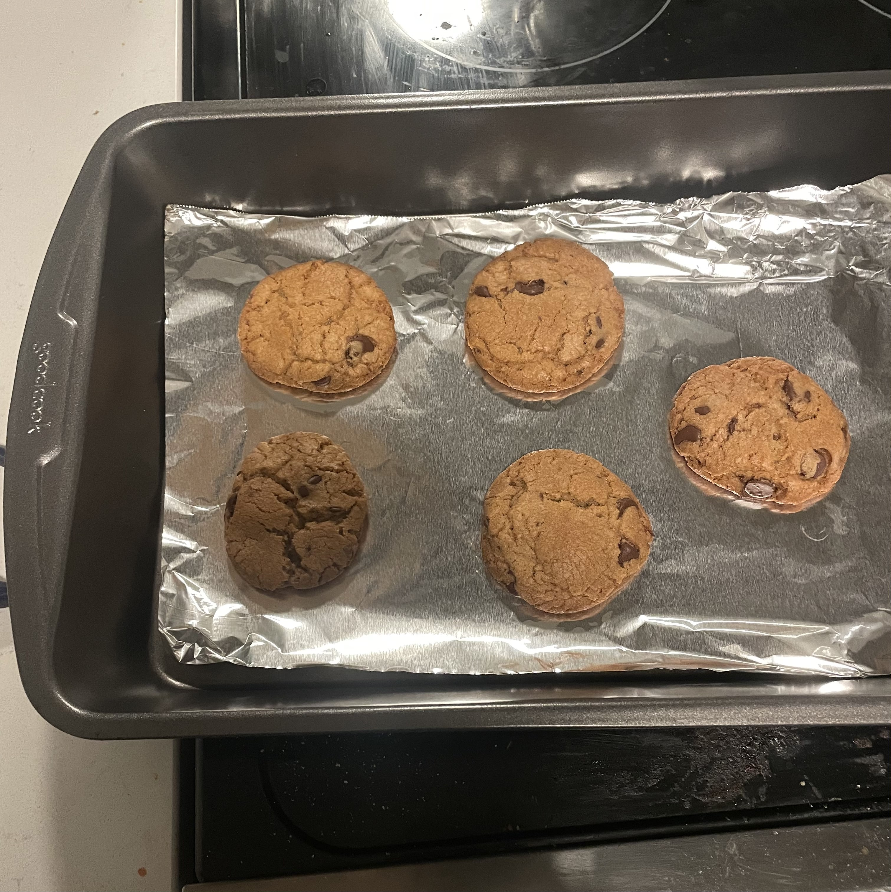

The view from the campus observatory window at dusk ^
First post! I figured it's time I put something here other just the project log. I don't know what the balance is between just journaling about whatever I'm thinking or trying to be specific and intentional with it, but for now, here's an update.
There's a lot of fireflies here, which I haven't seen this often since spending summer in New York in 2023. It's honestly a lot more bustling in Champaign / Urbana (college town) than you'd think. I thought it'd be reminscent of the two times I spent spring break here, where the streets were genuinely empty and tumble-weed friendly, but actually, there's a good amount of people here, some mix of summer students and faculty and post-grads flopping about. And a surprising number of people I know well are here too.
I can't believe it's the end of June already. I've still got to do a number of things, including decide my post-July plans. Do I go to Philly with Vaidehee (my best friend) and just try to figure things out there? It seems rash and objectively less practical than moving back home, and I still kind of want to do it. I bought my flight back home today (August 4th), but I can change it depending on whatever happens and what I decide. I guess we'll see. (I've said this and it's going to sound corny and obvious, but I'm always in awe of just the fact that enough time will pass and then I'll just know how things turned out. All these questions and me in three months will just know how it all crumbled. If someone's reading this, I really like writing letters to the future with https://www.futureme.org/sessions/new. It started as this assignment from freshman year of high school to write something to ourselves after high school graduation, but I really, really like the practice. It's nice to hear about all the things you were thinking about and agonizing over. It's nice to see if it turned out how you wanted, and it's nice to see that even if you're in a place you didn't expect at all, you're in fact still going on as you always are.)
Anyways, here's some stuff that's been floating around in my head lately:
I was visiting my friend in St. Louis and this song played from recommendations after hiking in this state park 30 minutes outside of St. Louis. It played right as we pulled into their apartment, and it was so perfect for that moment. And I just really like the song.
I really like this edit I saw the other day. This is also another thing on my summer bucketlist, edit another video.
I made these brown butter chocolate chip cookies yday... they're decent but I feel like the trap of brown butter baked goods is that they taste way more flavorful and brown butter-y in their raw dough form than their post-bake form. It kinda just tastes like any other pretty good chocolate chip cookie. It's not the fault of the recipe or anything, I think this just happens. What can ya do?
That's all for now. Cheers.